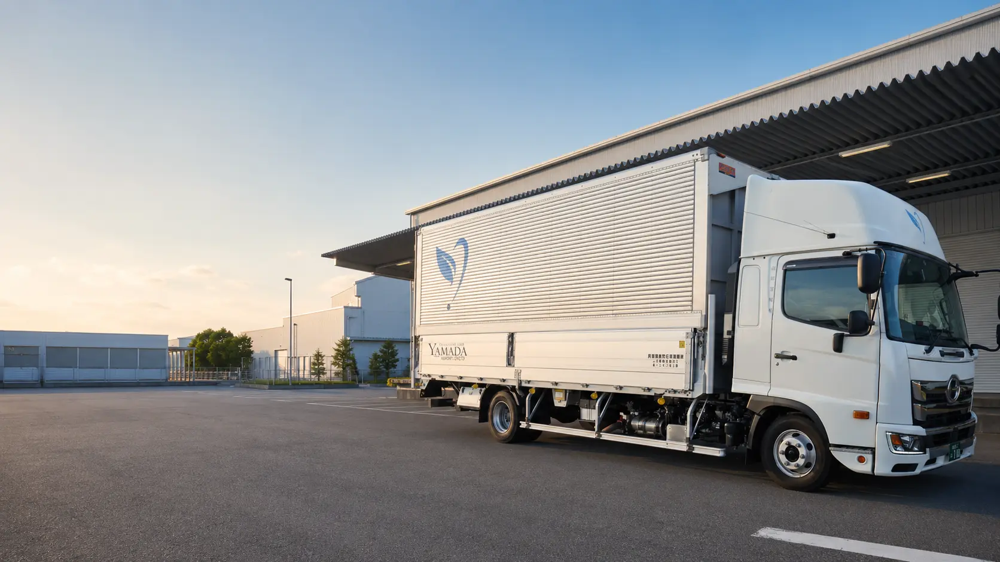

目標を持ち続けられる方
独立したい、技術を身につけたい、安定して働きたい。自分の未来に意欲を持てる方。

RECRUIT
経験よりも、素直に学ぶ姿勢とチームを大切にする気持ちを歓迎します。
WORK STYLE
山田運輸は、長く安心して働ける環境づくりに取り組んでいます。コースや勤務日数を相談しながら、自分に合ったペースで働くことができます。
各部門の経験者と連携できる教育体制があるため、未経験からドライバーを目指す方も歓迎します。
WHO WE WANT
独立したい、技術を身につけたい、安定して働きたい。自分の未来に意欲を持てる方。
経験以上に、吸収する力を重視。新しい仕事を前向きに覚えられる方。
挨拶や報告・連絡・相談を大切にし、チームで協力して仕事を進められる方。
OPEN POSITIONS
2t・4tドライバーを中心に、複数の配送コースがあります。
決まったルートを中心とした夜間配送。0:00〜10:00を基本とするコースです。
法人のお客様への集荷・配送。6:00〜16:00を基本とするコースです。
1日数件程度の店舗配送。女性ドライバーも活躍しています。
自社倉庫を起点としたセンター間配送。運行シフトはコースにより異なります。
REQUIREMENTS
仕事内容の詳細は面接時にご説明します。ご自身に合うコースをご相談ください。
BENEFITS
健康保険・厚生年金・労災保険・雇用保険
資格手当・役職手当・通勤手当（上限あり）
業務に関わる資格取得を会社が費用面からサポート
有給休暇・年末年始休暇・慶弔休暇など
仕事に集中できるよう、作業服を支給
定期健康診断を実施し、社員の健康を継続的に確認
ENTRY
経験の有無や希望する勤務スタイルを確認し、合うコースをご案内します。